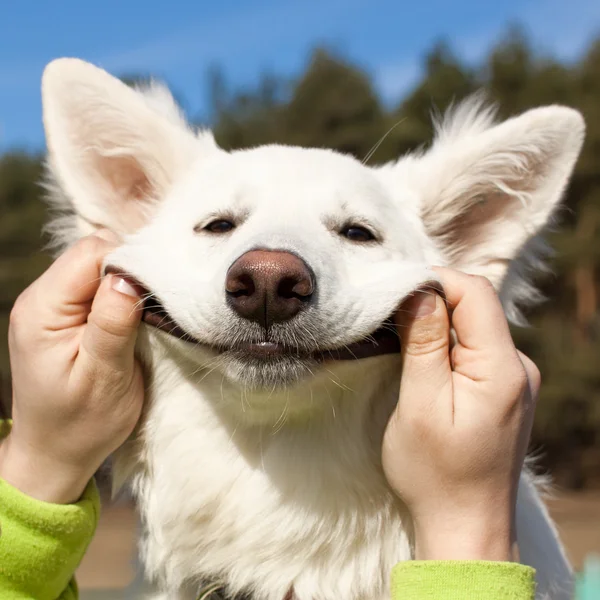
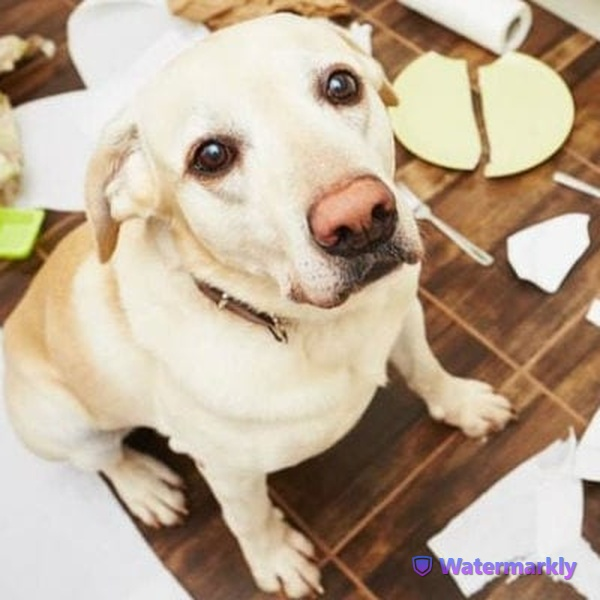
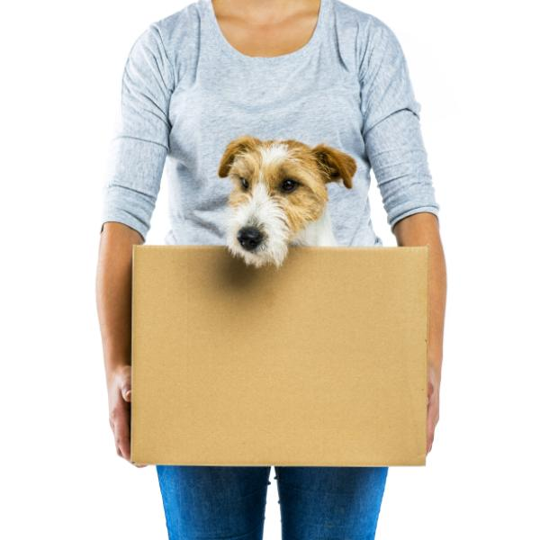
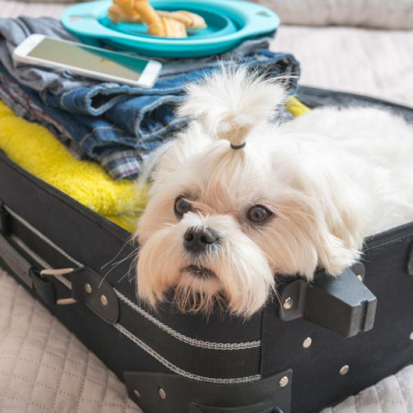

PERROS Felices

Te contamos algunos ejercicios cognitivos para aprender jugando y para reforzar así, el vínculo de amor y respeto con tu mascota
Enseñale a tu perro habilidades caninas. Favorece su parte del pensamiento, ayuda a la resolución diaria de problemas y también a fomentar el vínculo con sus humanos.
Podés esneñarle ejercicios como:
- Sentado
- Echado
- Girar
- Trabajo de autocontrol
- Dar la pata
Malos Hábitos = Malas Conductas

He aquí una lista de malos hábitos o prácticas que pueden ocasionar que tu perro desarrolle comportamientos no deseados.
Acariciarlo mientras tiene miedo. Eso solo le comunicará que estar asustado es lo correcto y que tu lo estás premiando por eso.
Darle probaditas de comida. Puede derivar en que tu perro se vuelva “caprichoso” para comer y rechace sus croquetas. También puede dañar su salud.
Usar su nombre antes o después de un correctivo. ¡Max, NO! Eso hará que relacione su nombre con un regaño o una mala experiencia y cuando quieras que acuda a tu llamado, pensará que algo hizo mal.
¿Y si adoptás una mascota adulta?
Existen muchas protectoras en todo el país que hacen un trabajo inmenso para rescatar perros y gatos de la calle. Estos animales que fueron abandonados y sufrieron innumerables maltratos.
Un perro o gato adulto tiene muchas virtudes, como por ejemplo: tienen un carácter ya formado, no van a morder tus zapatillas o arañar los sillones; son más tranquilos y no requieren tanto adiestramiento como un cachorro.
Lo único que necesitan, además de agua, comida y un lugar donde dormir, es AMOR para recuperar la confianza que perdieron luego de años de sufrimiento y desarraigo. Que vos los sumes a tu familia, significa para ellos una segunda oportunidad y todas las personas que conviven con perros y gatos rescatados de la calle coinciden: cuando los adoptás, te lo agradecen para siempre.
Mudanzas. Consejos para que sea un éxito

Los cambios de hogar son siempre un estres, para nosotros y para ellos. En esta nota te damos tips para que prepares a tus mascotas para el cambio, y que sea todo un éxito.
Para facilitar la transición debemos:
- Mantener la rutina de tu perro al máximo y mejor que nunca (los paseos diarios y a la misma hora son vitales).
- Preparar el medio de transporte donde viajará y acostumbrarlo al uso de transportadora.
- Practicarle un examen general de salud.
- Hacerle una placa de identificación con la dirección de la nueva casa.
- No lavar los objetos de tu perro, sino trasladarlos intactos al nuevo hogar para conservar olores importantes para él.
- No cambiar ni renovar su cama, cobija y/o casa
Consejos útiles para viajar con tu mascota

Viajar con tu mascota, puede ser una aventura increíble, o una mala experiencia para ambos.
- Si viajas en avión, es fundamental que consultes las condiciones de la aerolínea para el transporte de animales. Generalmente, solicitan certificados de vacunación, constancias de salud firmadas por un veterinario y otros documentos que debes tramitar con anticipación.
- Si viajas en tu propio auto, puedes adquirir algunos elementos que pueden hacer más llevadero el viaje, como una tela impermeable para proteger el asiento, arneses adaptables para los cinturones de seguridad, vasijas desechables o un trapo para limpiar la trompa de tu mascota constantemente hay perros que babean mucho.
- Si viajas en transporte terrestre público, es fundamental que hables con el conductor y establezcas las condiciones para transportar a tu mascota. En ocasiones te obligarán a proteger el asiento, ubicarlo en el piso, usar una jaula o alejarlo de los demás pasajeros.